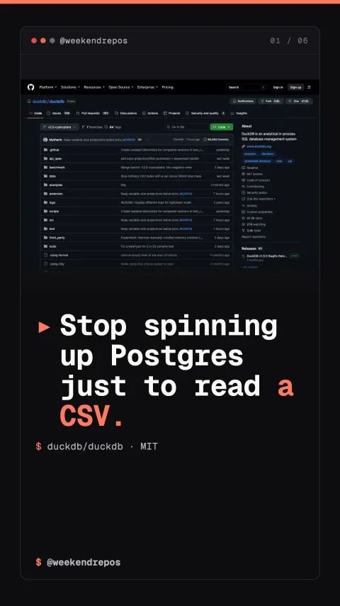

duckdb/duckdb
SQL on any CSV or Parquet file, no server required

Stop spinning up Postgres just to read a CSV.
No server. No import. Just query the file.
You type one SQL command, point it at the CSV, and DuckDB reads it — no import, no server.
real query, real CSV — 578 rows back instantly
Postgres needs a server. DuckDB just needs a file.
A normal database makes you install and configure it, then keep a server running. DuckDB skips that — it runs directly against your data file.
in-process: no separate server, no daemon
Zero import steps. Query CSV, Parquet, JSON directly.
DuckDB reads CSV, Parquet, and JSON files by itself. It figures out the columns and types — nothing to import first.
auto-detects columns and types from the CSV itself
Vectorized execution engine runs entirely in-process.
It processes data in columnar vectors inside your application process, giving you data warehouse speeds directly on your laptop.
vectorized columnar engine · zero network serialization
AWS and MotherDuck help fund its development.
DuckDB started as academic research. Now AWS and MotherDuck help fund it, and it's closing in on forty thousand stars.
39,971 stars — backed by AWS, MotherDuck